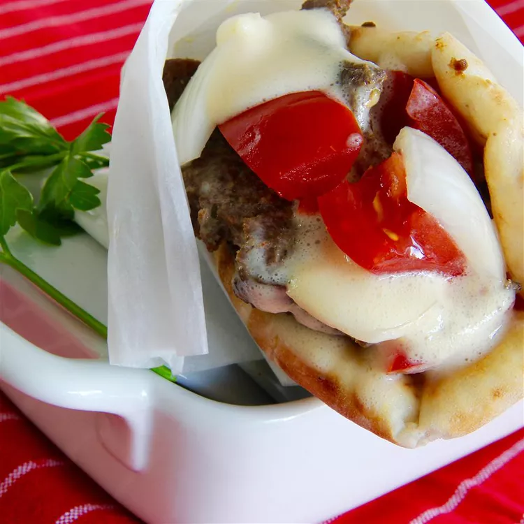

Home
Original Donair Recipe

Description
This Canadian street food originating in Halifax, Nova Scotia, consists of spiced, sliced ground beef cooked on a
rotating
spit, served in a warm pita with chopped tomatoes and onions, and drizzled with a distinctive sweet sauce made from
condensed milk,
sugar, and vinegar.
Ingredients
- 1 pound ground beef
- 2 teaspoons cayenne pepper
- 1 teaspoon ground black pepper
- Teaspoon onion powder
- 1 teaspoon garlic powder
- 1 teaspoon salt
- 1 teaspoon paprika
- 1 teaspoon dried oregano
- 1 (12 ounce) can evaporated milk
- ½ cup white sugar
- ¼ cup white vinegar, or to taste
- Pita Bread